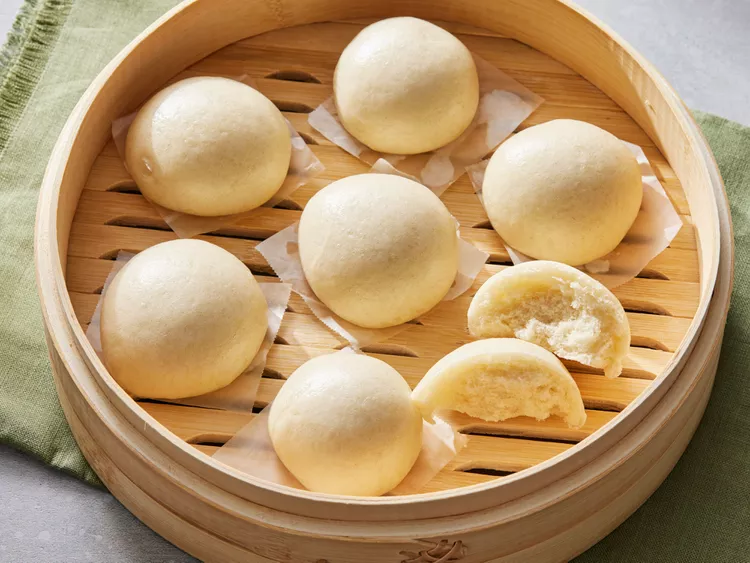

Home
Chinese Steamed Bun

Description
Crafting fluffy Chinese steamed buns, or Baozi, is a rewarding process centered on creating a perfectly soft, leavened dough that encases a flavorful filling. The journey begins with a simple dough made from flour, yeast, and a touch of sugar, which is kneaded until smooth and then left to proof in a warm place until it doubles in size, promising a light and airy texture. While the dough rises, a savory filling is prepared—often a mixture of minced pork, chicken, or vegetables seasoned with soy sauce, sesame oil, and ginger. Once risen, the dough is punched down, divided, and rolled into discs, which are then carefully filled and pleated shut to form the classic bun shape. After a crucial second, shorter proofing period that allows the assembled buns to relax and puff up, they are arranged in a steamer and cooked over boiling water until they swell into pillowy, tender morsels, ready to be enjoyed warm.
Ingredients
- 1 ¾ cups all-purpose flour, divided
- ¾ cup warm water, divided
- 1 tablespoon active dry yeast
- 1 teaspoon white sugar
- 2 tablespoons white sugar
- 1 tablespoon vegetable oil
- ¼ teaspoon salt
- ½ teaspoon baking powder
Steps
- Gather all ingredients.
- Mix together 1/4 cup flour, 1/4 cup warm water, yeast, and 1 teaspoon sugar in a large bowl. Allow to sit for 30 minutes.
- Mix in remaining 1 ½ cups flour, remaining 1/2 cup warm water, 2 tablespoons sugar, vegetable oil, and salt. Knead until dough is smooth and elastic.
- Transfer to a greased bowl, roll to coat with oil, and let sit until tripled in size, 2 ½ to 3 hours.
- Punch down dough and spread out on a floured board. Sprinkle baking powder evenly on surface of dough; knead for 5 minutes.
- Divide dough in half; set aside one half in a covered bowl. Divide remaining half into 12 equal pieces.
- Shape each into a ball; transfer each ball to a small square of waxed paper with the smooth surface facing up. Repeat portioning and shaping with remaining dough half. Cover all 24 dough balls and let sit until doubled in size, about 30 minutes.
- Bring some water to a boil in a wok, then reduce heat to medium and keep water at a low boil. Place the steam plate on a small wire rack in the middle of the wok, leaving at least 2 inches of space between the plate and the wok. Working in batches, place buns on waxed paper squares onto the steam plate, leaving 1 to 2 inches between buns.
- Cover and steam buns for 15 minutes. Carefully remove the lid, so condensation doesn't drip onto buns. Continue steaming remaining buns until all are cooked.